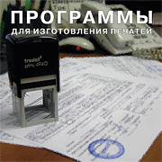

Программы для изготовления печатей

Незаменимый мультимедийный помощник для тех, кто начал осваивать процессы изготовления печатей и штампов.
На диске содержится подробная видео-инструкция по изготовлению печатей с использованием фотополимерной технологии.
Для того чтобы изготовить качественное клише, вам предложат подробно, по шагам изучить весь процесс. Кроме того, Вы найдете подробное описание работы в данном графическом редакторе, иллюстрацию по созданию макета печати.
Так же Вам будет полезно ознакомиться с такими программами, как Stampmaker (программа для создания печатей под Windows); STAMP - (программа для создания печатей и штампов, которая создана с функциями позволяющими, размазывать печать); Font Navigator (программа для просмотра и сортировки шрифтов).
Шрифты - необходимы при создании печатей, на диске их содержится около 3000, и мы сами используем их в своей работе.
Вам не обойтись без наборов шаблонов стандартных печатей, окантовок, рамочек и сеток порой необходимых в изготовлении печатей - все это есть на диске.
В дополнение к вышеперечисленному, добавим еще несколько полезных программ, которые не требуют от вас дизайнерских навыков. Они просты в использовании и интуитивно понятны: PECHAT 0.9 (программа для изготовления макетов печатей под DOS), SEAL WIN - программа позволяет создавать на компьютере печати любой формы. LETTERP - программа, содержащая много разделов и образцов писем, от личных до деловых. COPYSHOP - программа, необходимая при копировании документов. LOGOTYP - программа для создания логотипов, и в завершение - VISIT (программа для изготовления визиток).
Содержание диска (Программы для изготовления печатей)
Видеоинструкция по процессу изготовления печатей по фотополимерной технологии, в которой запечатлен процесс изготовления печати по фотополимерной технологии. Показаны все шаги и последовательность действий, которые Вам будет необходимо соблюсти для получения качественного фотополимерного клише.
Инструкция по Corel Draw с пошаговым описанием процесса создания печатей в данном графическом редакторе. где также пошагово описано создание макета печати в данном графическом редакторе. Используя данную инструкцию, отрисовка печати будет отнимать у Вас гораздо меньше времени.
Stampmaker - программа для создания печатей под Windows.
STAMP - программа для создания печатей и штампов. Программа проста в использовании. Готовый макет печати можно распечатать при помощи принтера на любом документе и наглядно убедиться в качестве выполненной печати, причем для большей наглядности программа создана с функциями позволяющими, размазывать печать (при варианте с ксероксом - неотличимая подделка). Готовый макет печати можно совместить практически с любым оборудованием для изготовления печатей.
Font Navigator - программа для просмотра и сортировки шрифтов.
Шрифты - часто используемые при изготовлении печатей – около 3000 специально отобранных шрифтов, которые мы используем в своей работе сами.
Набор - шаблонов стандартных печатей, окантовок, рамочек и сеток порой необходимых в изготовлении печатей.
А также еще несколько полезных программ, которые не требуют от вас дизайнерских навыков. Они просты в использовании и интуитивно понятны:
PECHAT 0.9 - программа для изготовления макетов печатей под DOS
SEAL WIN - программа позволяет создавать на компьютере печати различной конфигурации - от круглой до треугольной и штампов.
Программа имеет простой интерфейс в котором разберется даже ребенок. Программа полнофункциональная и не требует регистрации. В составе программы удобный и понятный HELP на русском языке. Сама программа русскоязычная.
LETTERP - программа для печати писем, содержит много разделов и образцов писем, от личных до деловых.
COPYSHOP - Если вам надо сделать копию документа с использованием сканера и принтера – эта программа для Вас.
LOGOTYP – программа для создания логотипов.
VISIT – программа для изготовления визиток.
|
)){kind=link}
)){kind=link}